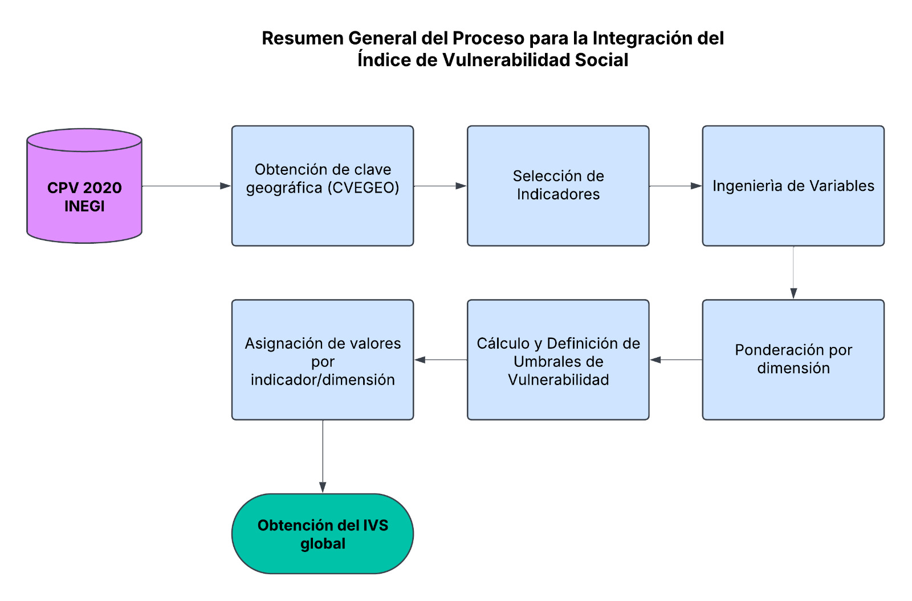

6 Método
Para realizar la presente aproximación estadística se basó en la metodología propuesta en Atlas de vulnerabilidad hídrica en México ante el cambio climático por el IMTA (Instituto Mexicano de Tecnología del Agua) en 2015.
6.1 Clave geográfica
Como la clave geográfica (CVEGEO) compuesta de 16 dígitos no estaba en la base de datos de INEGI, la construimos utilizando los siguientes elementos disponibles:
| Elemento | Descripción | Longitud |
|---|---|---|
| CVE_ENT | Clave de la entidad | 2 dígitos |
| CVE_MUN | Clave del municipio | 3 dígitos |
| CVE_LOC | Clave de la localidad | 4 dígitos |
| CVE_AGEB | Clave del AGEB | 4 dígitos |
| CVE_MZA | Clave de la manzana | 3 dígitos |
La clave geográfica construida será parte de la base de datos utilizada en este ejercicio, con el objetivo de generar una base de datos final que vincule la clave geográfica con la etiqueta IVS asignada.
6.2 Indicadores
En el IMTA se desarrolló el Índice de Vulnerabilidad Social en el ámbito municipal para México. Con la información disponible en las estadísticas nacionales, principalmente del Instituto Nacional de Estadística y Geografía (INEGI) y el Consejo Nacional de Población (Conapo), seleccionaron 15 indicadores (indicadores que reflejan mejor la vulnerabilidad de una población al enfrentar amenazas y riesgos derivados del cambio climático) que se agruparon, siguiendo la propuesta del CENAPRED (Centro Nacional de Prevención de Desastres) en cinco categorías que determinan la capacidad de desarrollo de una comunidad: población, educación, salud, empleo e ingreso y vivienda.
Los indicadores utilizados en esta aproximación son, en su mayoría, los propuestos por el IMTA, con algunas excepciones. En particular, se han excluido los siguientes indicadores:
- Dispersión de la población (% de población que habita en localidades menores a 2,500 habitantes).
- Proporción de médicos por cada 1,000 habitantes (no registrado en INEGI, sino en Secretaria de Salud).
- Tasa de mortalidad infantil (no registrado en INEGI, sino en CONAPO).
- Déficit de vivienda (% de viviendas que faltan para satisfacer la demanda de los hogares).
- Densidad de población (habitantes por km2, que para este ejercicio se “sustituye” por el indicador de población total).
Además, se incorporaron tres nuevos indicadores:
- POBTOT: Población total (total de personas que residen habitualmente en la demarcación territorial. Utilizado para calcular la proporción de otros indicadores en relación con el número de población total).
- TVIVHAB: Total de viviendas (utilizado para calcular la proporción de otras variables en relación con el número total de viviendas).
- PROM_OCUP: Promedio de ocupantes en viviendas particulares habitadas (este indicador mide cuántas personas, en promedio, viven en cada vivienda particular habitada).
Finalmente, este estudio emplea 13 indicadores provenientes de la base de datos del INEGI, los cuales se presentan a continuación, organizados por categoría temática:
| Categoría | Indicador | Descripción |
|---|---|---|
| Población | POBTOT | Población total |
| PROM_OCUP | Promedio de ocupantes en viviendas particulares habitadas | |
| P3YM_HLI | Porcentaje de población de habla indígena | |
| PHOGJEF_F | Población en hogares censales con persona de referencia mujer (porcentaje de jefas de familia) | |
| Educación | P15YM_AN | Porcentaje de analfabetismo (% de población de 15 años y más que no sabe leer ni escribir) |
| GRAPROES | Grado promedio de escolaridad | |
| Salud | PSINDER | Porcentaje de población no derechohabiente (% de población que no cuenta con servicios de salud pública) |
| Empleo | PEA | Porcentaje de la población económicamente activa que recibe menos de dos salarios mínimos |
| POB15_64 | Razón dependiente (% de población dependiente –menores de 15 años y mayores de 65 años– con relación a la población económicamente productiva) | |
| Vivienda | TVIVHAB | Total de viviendas |
| VPH_AGUAFV | Porcentaje de viviendas sin agua entubada | |
| VPH_NODREN | Porcentaje de viviendas sin drenaje | |
| VPH_PISOTI | Porcentaje de viviendas con piso de tierra |
Todas los indicadores, excepto PROM_OCUP y GRAPROES, no están reportados como porcentajes por el INEGI, sino como valores absolutos, por lo que es necesario calcular sus porcentajes. POBTOT y TVIVHAB sirvieron como base para estos cálculos. En el caso de POB15_64, primero se obtuvo su valor restándolo de POBTOT y posteriormente se calculó el porcentaje correspondiente.
Debido a que POBTOT y TVIVHAB no se emplearán para asignarles una calificación ni una etiqueta de IVS, el cálculo de estadísticas para el método se basa únicamente en los 11 indicadores restantes.
6.3 Ponderación de indicadores
En la nueva versión del IVS del IMTA, los indicadores fueron ponderados de manera distinta a la versión de 2010, cuando casi todos tenían un peso uniforme de 1.0. En esta actualización, se decidió asignar un peso diferenciado a cada indicador en los índices de vulnerabilidad temáticos, tras analizar su impacto en la vulnerabilidad social y la respuesta ante eventos meteorológicos. Estos cambios en la nueva versión permiten ajustar la ponderación según los ejes temáticos y reflejar con mayor precisión la situación de los municipios del país.
A continuación, se presentan las ponderaciones de las variables coincidentes entre el método reciente del IMTA y el presente estudio.
| Ponderación de 1.0 | Ponderación de 2.0 |
|---|---|
| P3YM_HLI | GRAPROES |
| PHOGJEF_F | PSINDER |
| P15YM_AN | PEA |
| POB15_64 | VPH_AGUAFV |
| VPH_PISOTI | VPH_NODREN |
Al indicador PROM_OCUP, se le asignó ponderación de 1 por pertenecer a la misma categoría que los demás indicadores de población a pesar no estar indicada en la metodología base del IMTA. De este modo, tenemos la ponderación de los 11 indicadores de interés.
El indicador TVIVHAB y POBTOT no recibieron ponderación en este ejercicio, ya que se utiliza únicamente para calcular los porcentajes de los indicadores de vivienda y población, respectivamente, y no para asignar una calificación ni una etiqueta de IVS.
6.4 Construcción del IVS
- Cálculo del intervalo o umbral.
- Se calcula el rango de cada indicador restando el valor menor al valor mayor.
- El rango obtenido en el paso anterior se divide entre el número de categorías (en este caso, cinco).
- El valor resultante define el intervalo que se utilizará para establecer los umbrales de vulnerabilidad.
- Definición de los umbrales de vulnerabilidad por indicador.
- El primer umbral se obtiene sumando el intervalo al valor menor.
- El segundo umbral se obtiene sumando el intervalo al primer umbral.
- Se repite el proceso sucesivamente hasta obtener los cinco umbrales que representan los distintos niveles de vulnerabilidad:
| Rango de Valores | Nivel de Vulnerabilidad |
|---|---|
| Valores entre el mínimo y el primer umbral (mínimo + intervalo) | Muy Baja |
| Valores entre el primer y el segundo umbral (mínimo + 2 * intervalo) | Baja |
| Valores entre el segundo y el tercer umbral (mínimo + 3 * intervalo) | Media |
| Valores entre el tercer y el cuarto umbral (mínimo + 4 * intervalo) | Alta |
| Valores mayores que el cuarto umbral (más allá de mínimo + 4 * intervalo) | Muy Alta |
- Ajuste para variables de logro o satisfacción.
- En estos casos, el valor mayor se convierte en el umbral más bajo.
- Los umbrales sucesivos se calculan sumando el intervalo al valor anterior.
- Se sigue el mismo proceso para establecer los cinco niveles de vulnerabilidad, pero en orden inverso.
Aplicable a indicadores como el grado promedio de escolaridad (GRAPROES) y la población económicamente activa (PEA).
- Asignación de calificación según los umbrales.
| Indicadores con ponderación de 1.0 | ||
|---|---|---|
| Rango de Valores | Calificación | Nivel de Vulnerabilidad |
| Valores dentro del primer umbral | 0.20 | Muy Baja |
| Valores dentro del segundo umbral | 0.40 | Baja |
| Valores dentro del tercer umbral | 0.60 | Media |
| Valores dentro del cuarto umbral | 0.80 | Alta |
| Valores superiores al cuarto umbral | 1.00 o más | Muy Alta |
| Indicadores con ponderación de 2.0 | ||
|---|---|---|
| Rango de Valores | Calificación | Nivel de Vulnerabilidad |
| Valores dentro del primer umbral | 0.40 | Muy Baja |
| Valores dentro del segundo umbral | 0.80 | Baja |
| Valores dentro del tercer umbral | 1.20 | Media |
| Valores dentro del cuarto umbral | 1.60 | Alta |
| Valores superiores al cuarto umbral | 2.00 o más | Muy Alta |
De esta forma, a cada indicador se le asigna una calificación entre 0.20 y 1.00 (para indicadores con ponderaciones de 1.0) o entre 0.40 y 2.00 (para indicadores con ponderaciones de 2.0).
- Agrupación de indicadores por categorías.
- Los indicadores se agrupan en las siguientes categorías: población, educación, salud, empleo e ingreso, y vivienda.
- Se calcula el promedio de las calificaciones dentro de cada categoría.
- Elaboración del IVS definitivo.
- Se calcula el promedio de las calificaciones obtenidas en las cinco categorías de indicadores.
- Cada promedio se califica en función del umbral en el que se encuentra. En lugar de conservar la calificación numérica, se asigna la etiqueta de vulnerabilidad correspondiente (muy baja, baja, media, alta, muy alta), utilizando el siguiente criterio:
| Rango de Valores | Calificación | Nivel de Vulnerabilidad |
|---|---|---|
| Valores dentro del primer umbral | 0.20 | Muy Baja |
| Valores dentro del segundo umbral | 0.40 | Baja |
| Valores dentro del tercer umbral | 0.60 | Media |
| Valores dentro del cuarto umbral | 0.80 | Alta |
| Valores superiores al cuarto umbral | 1.00 o más | Muy Alta |
- Generación de la base de datos.
- Se construye una base de datos que asocia las etiquetas de vulnerabilidad asignadas con su respectiva clave geográfica. Esta estructura permite la identificación y el análisis territorial de cada unidad. La base de datos incluye únicamente dos columnas de interés: CVEGEO e IVS.
Para integrar el Índice de Vulnerabilidad Social, seguimos un proceso estructurado que vincula y aplica criterios específicos para su clasificación. A continuación, se presenta un resumen visual de este proceso, donde se detallan las etapas clave en la construcción del índice. Esta representación facilita la comprensión de las fases involucradas.

6.5 Herramientas
Para llevar a cabo el análisis y procesamiento de los datos, así como la generación del Índice de Vulnerabilidad Social, se emplearon diversas herramientas de software que facilitan la gestión de datos, programación, análisis estadístico y visualización. Las principales herramientas utilizadas son:
- Quarto: Se utilizó como herramienta para la creación y documentación del informe. Quarto permite generar documentos interactivos y reproducibles que integran código y resultados en un solo archivo. Su compatibilidad con múltiples lenguajes de programación facilita la combinación de análisis en R, Python y otras herramientas.
- R: Fue utilizado para el análisis estadístico y manejo de datos. R es un lenguaje ampliamente utilizado en la ciencia de datos y estadísticas, proporcionando un amplio conjunto de paquetes para manipulación de datos, análisis de variables y creación de gráficos.
- Visual Studio Code (VS Code): Se utilizó como entorno de desarrollo integrado (IDE) para escribir y ejecutar scripts en Python y R. VS Code es una herramienta flexible que permite trabajar con diversos lenguajes de programación y proporciona características útiles como la depuración, el control de versiones y la integración con otras herramientas de desarrollo.